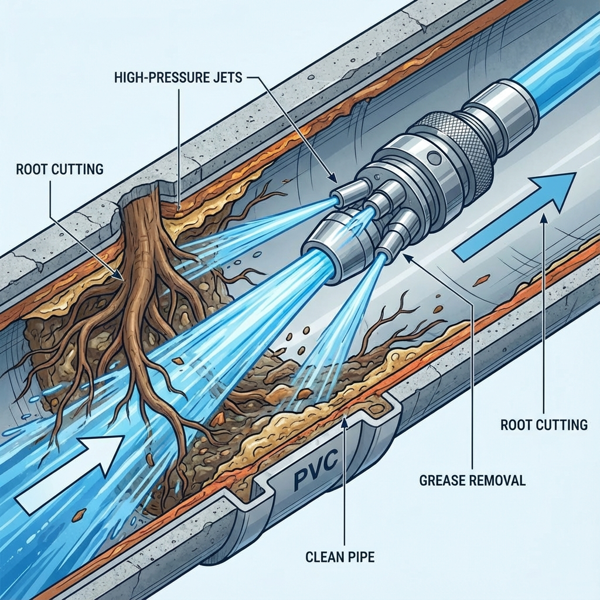
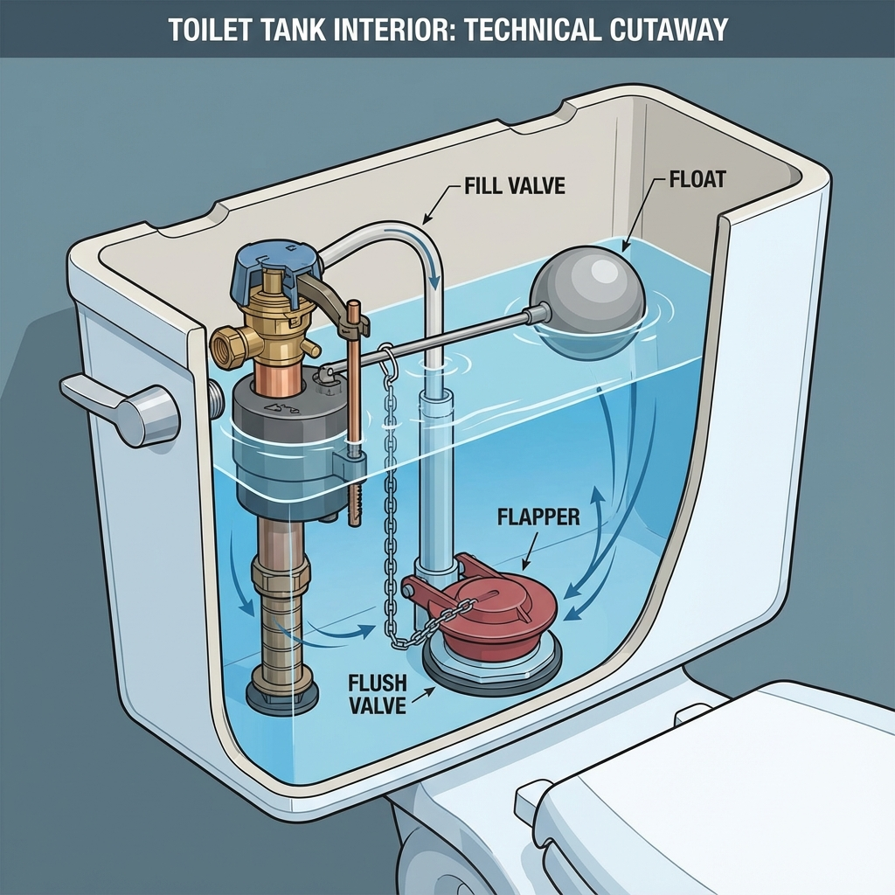

💰 PRICE BOOK MAESTRO PROFESIONAL - ORION TECH (EXPANDED V4)
Región: Bay Area, CA | Mano de Obra Lead: $185/hr | Ayudante: $95/hr | Markup Material: 30% | Margen Objetivo: 40-50%
Última Actualización: Diciembre 2024 | Fuentes: Ferguson, Home Depot, Angi, HomeGuide, Industry Research
[!NOTE]
Este Price Book incorpora las mejores prácticas de la industria (ServiceTitan, Workiz, The New Flat Rate) para maximizar ventas y profesionalismo.
📋 METODOLOGÍA DE CÁLCULO
| Concepto | Fórmula | Ejemplo |
|---|---|---|
| Costo Material (+Markup) | Costo Base × 1.30 | $100 → $130 |
| Costo Mano de Obra | Horas × $185/hr | 2 hr → $370 |
| Costo Total (Tu Costo) | Material + Mano de Obra | $130 + $370 = $500 |
| Precio Cliente | Costo Total × 1.45 (≈45% margen) | $500 × 1.45 = $725 |
| Contingencia | +10-15% para imprevistos | $725 + $72 = ~$800 |
🎯 SISTEMA DE PRICING ESCALONADO (GOOD / BETTER / BEST)
[!TIP]
Estrategia de Ventas: Siempre presenta las 3 opciones. El 60% de clientes elige "BETTER".
Cómo Usar el Sistema:
| Tier | Descripción | Markup Extra | Cuándo Ofrecer |
|---|---|---|---|
| 🥉 GOOD | Servicio básico, materiales estándar | Base | Cliente sensible a precio |
| 🥈 BETTER | Materiales premium, garantía extendida | +20-30% | Recomendado por defecto |
| 🥇 BEST | Top de línea, máxima garantía, add-ons incluidos | +40-60% | Clientes que quieren lo mejor |
Ejemplo Aplicado: Water Heater 40 Gal
| Opción | Descripción | Garantía | Precio |
|---|---|---|---|
| 🥉 GOOD | Bradford White Standard, install básico | 6 años tanque | $2,400 |
| 🥈 BETTER | Bradford White + Expansion Tank + Pan + Straps Premium | 6 años + 1 año labor | $2,950 |
| 🥇 BEST | Rheem Professional + All Code Upgrades + Recirculation Pump | 10 años + 2 años labor | $3,800 |
💡 SISTEMA DE UPSELLS INTELIGENTES
[!IMPORTANT]
Cada job es una oportunidad de venta adicional. Estos upsells aumentan ticket promedio 25-40%.
Upsells por Categoría:
🔧 Al Instalar Appliances:
| Upsell | Precio | Script de Venta |
|---|---|---|
| Braided SS Hoses (en vez de rubber) | +$85 | "Estas mangueras de acero inoxidable duran 10+ años y previenen inundaciones" |
| Emergency Shut-Off Valve | +$185 | "Si hay una fuga, puede cerrar el agua en segundos sin buscar la llave principal" |
| Hammer Arrestor | +$145 | "Elimina ese golpe que escucha cuando cierra el agua - protege sus tuberías" |
🔥 Al Trabajar con Gas:
| Upsell | Precio | Script de Venta |
|---|---|---|
| Seismic Valve | +$450 | "Obligatorio en California para nuevas instalaciones - protege de fugas por terremoto" |
| Sediment Trap | +$185 | "Captura partículas antes de que dañen su equipo" |
| Gas Leak Test (Whole House) | +$150 | "Ya que estamos aquí, podemos verificar todo su sistema de gas" |
🚿 Al Trabajar en Drenajes:
| Upsell | Precio | Script de Venta |
|---|---|---|
| Camera Inspection | +$250 | "Podemos ver exactamente qué hay en sus tuberías y prevenir problemas futuros" |
| Install Cleanout | +$800 | "Hace el mantenimiento futuro mucho más fácil y barato" |
| Enzyme Treatment (3-pack) | +$45 | "Mantenga sus drenajes limpios mensualmente con este tratamiento" |
🔥 Al Instalar Water Heater:
| Upsell | Precio | Script de Venta |
|---|---|---|
| Expansion Tank | +$350 | "Obligatorio por código y protege su calentador de daños por presión" |
| Recirculation Pump | +$650 | "Agua caliente instantánea en cualquier grifo - ahorra agua y tiempo" |
| PRV Check/Replace | +$450 | "La presión alta es la causa #1 de fallas prematuras de calentadores" |
| Anode Rod | +$185 | "Extiende la vida de su calentador 2-3 años adicionales" |
📋 GARANTÍAS Y WARRANTIES
Garantías Estándar AC Water Heaters & Plumbing:
| Tipo de Trabajo | Garantía Labor | Garantía Partes | Notas |
|---|---|---|---|
| Reparaciones Menores | 30 días | Fabricante | Flappers, válvulas, etc. |
| Instalaciones Estándar | 1 año | Fabricante | Faucets, disposals, toilets |
| Water Heaters | 1 año | 6-10 años (fab.) | Depende del modelo |
| Repipes | 2 años | Lifetime (copper/PEX) | Mano de obra garantizada |
| Drain Cleaning | 30 días | N/A | Misma obstrucción |
| Backflow Devices | 1 año | 5 años (fab.) | Requiere test anual |
[!WARNING]
Sin Garantía: Trabajos en tuberías galvanizadas, fixtures provistos por cliente, emergencias fuera de norma.
💳 OPCIONES DE FINANCIAMIENTO
Para Trabajos > $1,500:
| Opción | Proveedor | Términos | Tu Beneficio |
|---|---|---|---|
| 0% APR 12 meses | GreenSky / Synchrony | Aprobación rápida | Cierra más ventas |
| Low APR 24-60 meses | GreenSky | 7.99%-12.99% | Proyectos grandes |
| Same-As-Cash 6 meses | Synchrony | Sin interés si paga a tiempo | Popular |
Script de Financiamiento:
"Entiendo que $4,500 por un calentador tankless es una inversión considerable. La buena noticia es que ofrecemos financiamiento con 0% de interés por 12 meses. Eso serían solo $375/mes y tendría agua caliente infinita desde hoy."
📊 PRESENTACIÓN VISUAL PARA CLIENTES
Template de Cotización (3 Opciones):
┌─────────────────────────────────────────────────────────────┐
│ AC WATER HEATERS & PLUMBING - OPCIONES DE SERVICIO │
│ Cliente: _____________ | Fecha: ____________ │
├─────────────────────────────────────────────────────────────┤
│ │
│ 🥉 OPCIÓN BÁSICA (GOOD) $ _________ │
│ ○ [Descripción del servicio básico] │
│ ○ Garantía: 30 días labor │
│ │
│ 🥈 OPCIÓN RECOMENDADA (BETTER) ⭐ $ _________ │
│ ○ [Descripción del servicio mejorado] │
│ ○ Materiales premium incluidos │
│ ○ Garantía: 1 año labor │
│ │
│ 🥇 OPCIÓN PREMIUM (BEST) $ _________ │
│ ○ [Descripción completa con todos los upgrades] │
│ ○ Todos los code upgrades incluidos │
│ ○ Garantía: 2 años labor + extended warranty │
│ │
├─────────────────────────────────────────────────────────────┤
│ ✓ Trabajo garantizado ✓ Licenciado #______ │
│ ✓ Financiamiento disponible (0% APR 12 meses) │
└─────────────────────────────────────────────────────────────┘
📈 MÉTRICAS DE NEGOCIO
KPIs a Trackear:
| Métrica | Objetivo | Cómo Calcular |
|---|---|---|
| Ticket Promedio | >$450 | Total ventas ÷ # de jobs |
| Tasa de Cierre | >70% | Jobs cerrados ÷ Total cotizaciones |
| Upsell Rate | >40% | Jobs con upsell ÷ Total jobs |
| % BETTER/BEST | >50% | Clientes que eligen Better o Best ÷ Total |
| Repeat Customer Rate | >25% | Clientes que regresan ÷ Total clientes |
Calculadora de Ingresos Proyectados:
| Escenario | Jobs/Semana | Ticket Promedio | Ingreso Mensual | Ingreso Anual |
|---|---|---|---|---|
| Conservador | 8 | $350 | $11,200 | $134,400 |
| Moderado | 12 | $450 | $21,600 | $259,200 |
| Agresivo | 18 | $550 | $39,600 | $475,200 |
🆚 COMPARACIÓN CON COMPETENCIA (Software Price Books)
| Feature | ORION Price Book | ServiceTitan ($398/mo) | Workiz ($65/mo) | Housecall Pro ($59/mo) |
|---|---|---|---|---|
| Good/Better/Best Tiers | ✅ | ✅ | ✅ | ❌ |
| Desglose de Materiales | ✅ Detallado | ✅ | Básico | Básico |
| Upsell Recommendations | ✅ con Scripts | ✅ IA | ✅ | ❌ |
| Imágenes Didácticas | ✅ | ✅ | ✅ | ❌ |
| Regional Pricing (Bay Area) | ✅ | ✅ | ❌ | ❌ |
| Integración con IA (ORION) | ✅ | ❌ | ❌ | ❌ |
| Costo Mensual | $0 | $398+ | $65+ | $59+ |
1. APPLIANCE CONNECTION (ELECTRODOMÉSTICOS)

1.1 DISHWASHERS (Lavavajillas)
AP-002: Dishwasher Complete Installation (Monitor Only - Client Provides Unit)
Descripción: Instalación completa de lavavajillas provisto por cliente. Verificación de funcionamiento.
| Sub-Actividad | Tiempo | Detalle |
|---|---|---|
| Posicionar unidad bajo encimera | 15 min | Verificar nivel, ajustar patas |
| Conectar línea de suministro de agua | 20 min | 3/8" compression a válvula angular |
| Conectar línea de drenaje | 20 min | High loop o air gap obligatorio |
| Conexión eléctrica | 10 min | Verificar voltaje 120V, cord kit si necesario |
| Asegurar unidad a encimera | 10 min | Brackets de montaje |
| Prueba de funcionamiento | 15 min | Ciclo de prueba, verificar fugas |
| TOTAL | 1.5 hr |
Lista de Materiales (Si Aplica):
| Material | Cantidad | Precio Unitario | Subtotal |
|---|---|---|---|
| Braided SS Supply 48" | 1 | $18.00 | $18.00 |
| Drain hose 6' | 1 | $12.00 | $12.00 |
| Power cord kit 6' | 1 | $15.00 | $15.00 |
| Air gap (chrome) | 1 | $8.00 | $8.00 |
| Hose clamps | 2 | $2.00 | $4.00 |
| Subtotal Materiales | $57.00 | ||
| +30% Markup | $74.10 |
Cálculo de Precio:
| Concepto | Cálculo | Total |
|---|---|---|
| Mano de Obra (1.5 hr × $185) | $277.50 | |
| Materiales (con markup) | $74.10 | |
| Tu Costo Total | $351.60 | |
| Precio Cliente (45% margen) | $351.60 × 1.45 | $509.82 → $510 |
| Precio Recomendado (Rango) | $485 - $585 | |
| Tu Ganancia Neta | ~$158 - $233 |
AP-003: Complete Braided SS Supply Kit (Supply + Drain + Cord)
Tiempo: 30 min | Materiales: $45 (con markup: $58.50)
Tu Costo: $92 + $58.50 = $150.50
Precio Cliente: $265 - $325 | Margen: ~$115 - $175
AP-004: Braided Stainless Supply Line Only (48")
Tiempo: 15 min | Material: SS Supply 48" = $18 (con markup: $23.40)
Tu Costo: $46 + $23.40 = $69.40
Precio Cliente: $145 - $185 | Margen: ~$76 - $116
Fuente Material: Home Depot, Ferguson ($13-25 retail)
AP-005: Air Gap with Rubber Hose to Garbage Disposal
Descripción: Instalación de air gap obligatorio por código (evita retroceso de agua contaminada).
Lista de Materiales:
| Material | Precio |
|---|---|
| Air Gap Chrome | $8.00 |
| Rubber hose 5/8" | $6.00 |
| Hose clamps (2) | $4.00 |
| Total (+30%) | $23.40 |
Tiempo: 45 min | Tu Costo: $138 + $23.40 = $161.40
Precio Cliente: $285 - $350 | Margen: ~$124 - $189
1.2 ICE MAKERS (Fábricas de Hielo)
AP-018: Ice Maker Soft Copper Water Supply (Up to 15')
Sub-Actividades:
1. Localizar línea de agua fría más cercana (10 min)
2. Instalar saddle valve o angle stop (20 min)
3. Tender línea de cobre 1/4" (20 min)
4. Conectar al refrigerador (10 min)
Materiales:
| Item | Precio |
|---|---|
| Soft copper 1/4" × 15' | $18.00 |
| Self-piercing saddle valve | $12.00 |
| Compression fittings | $8.00 |
| Total (+30%) | $49.40 |
Tiempo: 1.0 hr | Tu Costo: $185 + $49.40 = $234.40
Precio Cliente: $425 - $525 | Margen: ~$191 - $291
AP-020: Emergency Water Shut-Off Valve (1/4 Turn)
Tiempo: 30 min | Material: Angle stop 1/4 turn + escutcheon = $15 (+30%: $19.50)
Tu Costo: $92 + $19.50 = $111.50
Precio Cliente: $225 - $285 | Margen: ~$114 - $174
AP-021: Recessed Box with Emergency Shut-Off
Descripción: Caja empotrada para ice maker con válvula de emergencia.
Tiempo: 2.0 hr | Materiales: Recessed box + valve + PEX ($85 con markup: $110.50)
Tu Costo: $370 + $110.50 = $480.50
Precio Cliente: $750 - $950 | Margen: ~$270 - $470
AP-022: Inline Water Filter for Ice Maker
Tiempo: 45 min | Material: Inline filter + fittings = $35 (+30%: $45.50)
Tu Costo: $138 + $45.50 = $183.50
Precio Cliente: $325 - $425 | Margen: ~$142 - $242
1.3 INSTA-HOTS (Dispensadores de Agua Caliente Instantánea)
AP-024: Water Supply to Insta-Hot
Tiempo: 1.0 hr | Material: Supply line + angle stop = $30 (+30%: $39)
Tu Costo: $185 + $39 = $224
Precio Cliente: $385 - $485 | Margen: ~$161 - $261
AP-025: Dispenser Supply from Insta-Hot + Valve
Tiempo: 1.5 hr | Material: Line + fittings + valve = $45 (+30%: $58.50)
Tu Costo: $277 + $58.50 = $335.50
Precio Cliente: $550 - $685 | Margen: ~$215 - $350
1.4 WASHING MACHINE (Lavadoras)
AP-027: Disconnect & Reinstall Washer & Dryer
Sub-Actividades:
1. Cerrar válvulas de agua (5 min)
2. Desconectar mangueras y drenaje (10 min)
3. Mover unidades (20 min)
4. Reconectar todo (25 min)
Tiempo: 1.0 hr | Materiales: N/A (cliente mantiene los suyos)
Tu Costo: $185
Precio Cliente: $350 - $450 | Margen: ~$165 - $265
AP-029: Braided Stainless No-Burst Hoses (Par)
Material: 2× FloodSafe SS Hoses 6' = $35 (+30%: $45.50)
Tiempo: 15 min
Tu Costo: $46 + $45.50 = $91.50
Precio Cliente: $165 - $225 | Margen: ~$74 - $134
AP-031: Trap & Standpipe (Excl. Drywall)
Tiempo: 2.0 hr | Material: 2" P-trap, standpipe, fittings = $45 (+30%: $58.50)
Tu Costo: $370 + $58.50 = $428.50
Precio Cliente: $750 - $950 | Margen: ~$322 - $522
AP-032: Recessed Box (Water & Drain)
Tiempo: 3.0 hr | Material: Oatey box, valves, drain = $120 (+30%: $156)
Tu Costo: $555 + $156 = $711
Precio Cliente: $1,150 - $1,450 | Margen: ~$439 - $739
AP-033: Washing Machine Drain Pan & Drain Line
Tiempo: 1.5 hr | Material: Pan + PVC drain + fittings = $45 (+30%: $58.50)
Tu Costo: $277 + $58.50 = $335.50
Precio Cliente: $550 - $685 | Margen: ~$215 - $350
AP-034: Hammer Arrestor
Descripción: Reduce golpe de ariete (water hammer) en lavadoras.
Tiempo: 30 min | Material: Sioux Chief AA = $35 (+30%: $45.50)
Tu Costo: $92 + $45.50 = $137.50
Precio Cliente: $250 - $325 | Margen: ~$113 - $188
2. GAS APPLIANCE & SYSTEM (SISTEMAS DE GAS)

2.1 GAS DRYER & RANGE CONNECTIONS
GS-007: Connect Gas Dryer (48" Stainless Flex)
Sub-Actividades:
| Tarea | Tiempo |
|---|---|
| Verificar shut-off valve existente | 5 min |
| Instalar gas flex con fittings | 25 min |
| Prueba de fugas (soapy water) | 10 min |
| Verificar ignición | 5 min |
Material:
| Item | Precio |
|---|---|
| SS Gas Flex 48" 1/2" | $28.00 |
| Gas shut-off valve (si no existe) | $15.00 |
| Yellow Teflon tape (gas) | $4.00 |
| Total (+30%) | $61.10 |
Tiempo: 45 min | Tu Costo: $138 + $61.10 = $199.10
Precio Cliente: $350 - $450 | Margen: ~$151 - $251
GS-008: Connect Gas Range/Cooktop (48" Stainless Flex)
Tiempo: 1.0 hr (más complejo por ubicación)
Material: Gas flex + fittings + valve = $50 (+30%: $65)
Tu Costo: $185 + $65 = $250
Precio Cliente: $425 - $550 | Margen: ~$175 - $300
GS-009: Connect Dryer Vent (Flex Between Dryer & Wall)
Tiempo: 30 min | Material: Semi-rigid flex duct 4" + clamps = $25 (+30%: $32.50)
Tu Costo: $92 + $32.50 = $124.50
Precio Cliente: $225 - $285 | Margen: ~$101 - $161
GS-010: Dryer Vent Kit Through Stucco/Siding
Tiempo: 2.5 hr | Material: Vent kit + hood + rigid duct = $65 (+30%: $84.50)
Tu Costo: $462 + $84.50 = $546.50
Precio Cliente: $950 - $1,200 | Margen: ~$404 - $654
GS-011: Hard Pipe Dryer Vent (Up to 10')
Sub-Actividades:
1. Demolición path (si aplica) - 30 min
2. Instalar rigid duct con elbows - 45 min
3. Conectar a exterior hood - 20 min
4. Sellar penetraciones - 15 min
5. Test airflow - 10 min
Material: Rigid aluminum 4" × 10' + elbows + hood + tape = $60 (+30%: $78)
Tiempo: 2.0 hr | Tu Costo: $370 + $78 = $448
Precio Cliente: $750 - $950 | Margen: ~$302 - $502
2.2 GAS VALVES & SAFETY
GS-012: Under House Repair Fee (Access Charge)
Descripción: Cargo adicional por trabajo en crawlspace.
Tiempo: Variable | Cargo Fijo: $150 - $250
GS-013: 1/2" × 18" SS Gas Supply with Emergency Shut-Off
Material:
| Item | Precio |
|---|---|
| SS Gas Flex 18" 1/2" | $22.00 |
| 1/2" Gas Ball Valve | $18.00 |
| Yellow Teflon | $4.00 |
| Total (+30%) | $57.20 |
Tiempo: 1.0 hr | Tu Costo: $185 + $57.20 = $242.20
Precio Cliente: $425 - $550 | Margen: ~$183 - $308
GS-014: Sediment Trap for Gas Line
Descripción: Obligatorio por código. Trampa de sedimento antes del appliance.
Material: Black iron tee 1/2" + nipple 3" + cap = $20 (+30%: $26)
Tiempo: 45 min | Tu Costo: $138 + $26 = $164
Precio Cliente: $285 - $385 | Margen: ~$121 - $221
GS-015: 1/2" Emergency Gas Shut-Off Valve
Tiempo: 45 min | Material: 1/2" Gas ball valve = $18 (+30%: $23.40)
Tu Costo: $138 + $23.40 = $161.40
Precio Cliente: $285 - $385 | Margen: ~$124 - $224
GS-016: 3/4" Emergency Gas Shut-Off Valve
Tiempo: 45 min | Material: 3/4" Gas ball valve = $25 (+30%: $32.50)
Tu Costo: $138 + $32.50 = $170.50
Precio Cliente: $325 - $425 | Margen: ~$155 - $255
GS-017: 1" Emergency Gas Shut-Off Valve
Tiempo: 1.0 hr | Material: 1" Gas ball valve + adapters = $45 (+30%: $58.50)
Tu Costo: $185 + $58.50 = $243.50
Precio Cliente: $425 - $550 | Margen: ~$182 - $307
GS-100: Seismic/Earthquake Shut-Off Valve (3/4" - 1")
Descripción: Válvula automática de cierre por sismo. OBLIGATORIO en California para nuevas instalaciones.
Sub-Actividades:
1. Cierre de gas en medidor (10 min)
2. Cortar línea existente (15 min)
3. Preparar conexiones (threading/adapters) (30 min)
4. Instalar válvula sísmica (20 min)
5. Prueba de presión (30 min)
6. Reencender pilotos (15 min)
Material (3/4"):
| Item | Precio |
|---|---|
| Seismic valve (Watts, NSF Listed) | $120.00 |
| Nipples, unions | $25.00 |
| Teflon, pipe dope | $5.00 |
| Total (+30%) | $195.00 |
Tiempo: 2.5 hr | Tu Costo: $462 + $195 = $657
Precio Cliente: $1,100 - $1,400 | Margen: ~$443 - $743
Fuente: Home Depot, Ferguson ($100-180 retail)
3. BACKFLOW DEVICES (PREVENCIÓN DE FLUJO INVERSO)
[!IMPORTANT]
Dispositivos de backflow requieren certificación anual. Ofrece plan de mantenimiento.
BF-036: 3/4" Reduced Pressure Backflow Preventer (RPZ)
Marca Recomendada: Wilkins 975XL3
Precio Material Verificado: $809 - $885 (Home Depot, Ferguson 2024)
Sub-Actividades:
1. Cerrar agua y drenar sistema (20 min)
2. Cortar línea existente (15 min)
3. Preparar conexiones (unions, adapters) (30 min)
4. Instalar device con soporte (45 min)
5. Instalar válvulas de aislamiento (30 min)
6. Prueba de funcionamiento (30 min)
Material:
| Item | Precio |
|---|---|
| Wilkins 975XL3 3/4" | $850.00 |
| Ball valves (2) | $40.00 |
| Unions/adapters | $30.00 |
| Support strut | $25.00 |
| Total (+30%) | $1,228.50 |
Tiempo: 3.0 hr | Tu Costo: $555 + $1,228.50 = $1,783.50
Precio Cliente: $2,800 - $3,200 | Margen: ~$1,017 - $1,417
Fuente Precio Device: Home Depot $809.99, CPE Supply $884.99 (verificado Dic 2024)
BF-037: 1" Reduced Pressure Backflow Preventer
Material: Wilkins 975XL 1" (~$950) + fittings = $1,050 (+30%: $1,365)
Tiempo: 3.5 hr | Tu Costo: $647 + $1,365 = $2,012
Precio Cliente: $3,200 - $3,800 | Margen: ~$1,188 - $1,788
BF-040: 2" Reduced Pressure Backflow Preventer
Material: Device 2" (~$1,800) + fittings = $1,950 (+30%: $2,535)
Tiempo: 5.0 hr | Tu Costo: $925 + $2,535 = $3,460
Precio Cliente: $5,500 - $6,500 | Margen: ~$2,040 - $3,040
BF-041: 3/4" or 1" Relief Valve Kit (Repair Parts)
Material: Repair kit = $120 (+30%: $156)
Tiempo: 1.0 hr | Tu Costo: $185 + $156 = $341
Precio Cliente: $550 - $750 | Margen: ~$209 - $409
BF-044: Backflow Bag (Cover)
Tiempo: 15 min | Material: Insulation bag = $85 (+30%: $110.50)
Tu Costo: $46 + $110.50 = $156.50
Precio Cliente: $265 - $325 | Margen: ~$109 - $169
4. DEMOLITION & PATCHING (DEMOLICIÓN Y PARCHES)
4.1 BATHROOM DEMO
DM-047: Whole Bath Demo (Excludes Subfloor)
Sub-Actividades:
| Tarea | Tiempo |
|---|---|
| Desconectar plomería (toilet, sink, tub) | 1.0 hr |
| Remover fixtures | 1.0 hr |
| Demo tile/walls si aplica | 1.0 hr |
| Disposal/cleanup | 1.0 hr |
Tiempo: 4.0 hr | Material: Disposal/dump fees = $100 (+30%: $130)
Tu Costo: $740 + $130 = $870
Precio Cliente: $1,500 - $2,000 | Margen: ~$630 - $1,130
DM-048: Fiberglass Tub/Shower with Walls
Tiempo: 3.0 hr | Disposal: $75 (+30%: $97.50)
Tu Costo: $555 + $97.50 = $652.50
Precio Cliente: $1,100 - $1,400 | Margen: ~$448 - $748
DM-049: Tile Tub/Shower with Walls
Tiempo: 5.0 hr | Disposal: $150 (+30%: $195)
Tu Costo: $925 + $195 = $1,120
Precio Cliente: $1,850 - $2,400 | Margen: ~$730 - $1,280
4.2 CONCRETE & STUCCO
DM-056: Re-Pour/Patch Concrete (2×2 Area)
Material: Quikrete sac, rebar, mixing = $40 (+30%: $52)
Tiempo: 2.5 hr | Tu Costo: $462 + $52 = $514
Precio Cliente: $850 - $1,100 | Margen: ~$336 - $586
DM-057: Re-Pour/Patch Concrete (4×4 Area)
Material: $80 (+30%: $104)
Tiempo: 4.0 hr | Tu Costo: $740 + $104 = $844
Precio Cliente: $1,450 - $1,850 | Margen: ~$606 - $1,006
DM-064: Patch Stucco (Up to 3×3)
Material: Stucco mix, mesh, paint = $35 (+30%: $45.50)
Tiempo: 2.0 hr | Tu Costo: $370 + $45.50 = $415.50
Precio Cliente: $685 - $850 | Margen: ~$270 - $435
4.3 DRYWALL
DM-067: Cut Drywall Hole (Up to 2×2)
Tiempo: 30 min | Material: N/A
Tu Costo: $92
Precio Cliente: $165 - $225 | Margen: ~$73 - $133
DM-075: Patch Wall (2×2)
Material: Drywall patch, mud, tape, sanding = $25 (+30%: $32.50)
Tiempo: 1.5 hr | Tu Costo: $277 + $32.50 = $309.50
Precio Cliente: $550 - $750 | Margen: ~$241 - $441
DM-076: Patch Wall (3×3)
Material: $35 (+30%: $45.50)
Tiempo: 2.0 hr | Tu Costo: $370 + $45.50 = $415.50
Precio Cliente: $685 - $850 | Margen: ~$270 - $435
DM-081: Lath & Plaster Patch (3×3)
Material: Drywall + mud + special mesh = $45 (+30%: $58.50)
Tiempo: 2.5 hr | Tu Costo: $462 + $58.50 = $520.50
Precio Cliente: $850 - $1,100 | Margen: ~$330 - $580
5. DRAIN LINE STOPPAGES (LIMPIEZA DE DRENAJES)

5.1 SINK & LAV STOPPAGES
DR-083: Bar Sink Stoppage (Remove Trap)
Tiempo: 30 min | Material: N/A
Tu Costo: $92
Precio Cliente: $165 - $225 | Margen: ~$73 - $133
DR-084: Kitchen Sink (Outside Clean Out)
Tiempo: 45 min | Tu Costo: $138
Precio Cliente: $225 - $285 | Margen: ~$87 - $147
DR-085: Kitchen Sink (Under Sink - Cable Machine)
Sub-Actividades:
1. Remove P-trap (5 min)
2. Cable machine hasta 25' (30 min)
3. Reassemble, test (10 min)
Tiempo: 45 min | Tu Costo: $138
Precio Cliente: $225 - $285 | Margen: ~$87 - $147
DR-088: Lavatory Stoppage (Through Pop-Up)
Tiempo: 30 min | Tu Costo: $92
Precio Cliente: $165 - $225 | Margen: ~$73 - $133
DR-089: Lavatory Stoppage (Remove Trap)
Tiempo: 45 min | Tu Costo: $138
Precio Cliente: $185 - $250 | Margen: ~$47 - $112
5.2 MAIN LINE STOPPAGES
DR-090: Main Line (Through Clean Out - 1st Bail)
Sub-Actividades:
1. Locate clean out (5 min)
2. Setup machine (10 min)
3. Cable main line 3-4" (60 min)
4. Test flow (10 min)
5. Cleanup (15 min)
Tiempo: 1.5-2.0 hr | Tu Costo: $277 - $370
Precio Cliente: $385 - $550 | Margen: ~$108 - $180
DR-091: Main Line (Through Water Closet - 1st Bail)
Sub-Actividades:
1. Pull toilet (15 min)
2. Cable through flange (75 min)
3. Reinstall toilet (25 min)
4. Test (5 min)
Material: Wax ring + bolts = $15 (+30%: $19.50)
Tiempo: 2.0 hr | Tu Costo: $370 + $19.50 = $389.50
Precio Cliente: $550 - $750 | Margen: ~$161 - $361
DR-092: Additional Bail (Main Line)
Tiempo: 1.0 hr adicional
Precio Cliente: +$185 - $285 por bail adicional
DR-093: Water Closet Stoppage (Auger)
Tiempo: 30 min | Tu Costo: $92
Precio Cliente: $145 - $185 | Margen: ~$53 - $93
5.3 HYDROJET & CAMERA
DR-098: HydroJet Residential Main (Up to 200')
Descripción: Limpieza a alta presión para grasa, raíces, y buildup severo.
Sub-Actividades:
1. Camera inspection previa (30 min)
2. Setup jetter equipment (20 min)
3. Jetting cycles (60-90 min)
4. Post-camera verification (15 min)
Tiempo: 2.5-3.0 hr | Material: Nozzle wear = $25 (+30%: $32.50)
Tu Costo: $462-$555 + $32.50 = $495-$588
Precio Cliente: $850 - $1,250 | Margen: ~$355 - $662
DR-099: Camera Sewer Line (Drain Vision Inspection)
Tiempo: 1.0 hr | Material: USB drive for recording = $10 (+30%: $13)
Tu Costo: $185 + $13 = $198
Precio Cliente: $350 - $550 | Margen: ~$152 - $352
DR-100: Install House Clean Out (One Way)
Descripción: Instalación de cleanout accesible para mantenimiento futuro.
Sub-Actividades:
1. Excavation 2×2×2 (1.0 hr)
2. Cut existing line (20 min)
3. Install wye + cleanout (45 min)
4. Backfill (30 min)
5. Test (15 min)
Material: 4" ABS wye, cleanout, riser, box = $80 (+30%: $104)
Tiempo: 3.0-4.0 hr | Tu Costo: $555-$740 + $104 = $659-$844
Precio Cliente: $1,200 - $1,600 | Margen: ~$541 - $756
DR-114: HydroJet Commercial Main (Up to 300')
Tiempo: 4.0 hr | Material: $50 (+30%: $65)
Tu Costo: $740 + $65 = $805
Precio Cliente: $1,450 - $1,850 | Margen: ~$645 - $1,045
6. FAUCET INSTALLATIONS (GRIFERÍA)
FC-123: Kitchen Faucet (No Pull Out)
Sub-Actividades:
1. Turn off water, disconnect old (15 min)
2. Remove old faucet (10 min)
3. Clean surface, apply putty (5 min)
4. Install new faucet (20 min)
5. Connect supplies (10 min)
Material: Supply lines + putty = $20 (+30%: $26)
Tiempo: 1.0 hr | Tu Costo: $185 + $26 = $211
Precio Cliente: $350 - $450 | Margen: ~$139 - $239
FC-124: Kitchen Faucet (With Pull Out/Down)
Tiempo: 1.25 hr | Material: $25 (+30%: $32.50)
Tu Costo: $231 + $32.50 = $263.50
Precio Cliente: $425 - $550 | Margen: ~$162 - $287
FC-125: Kitchen Faucet (Pull Down Goose Neck w/Spring)
Tiempo: 1.5 hr | Material: $30 (+30%: $39)
Tu Costo: $277 + $39 = $316
Precio Cliente: $485 - $625 | Margen: ~$169 - $309
FC-126: Bathroom Faucet (4" Centered)
Tiempo: 1.0 hr | Material: $20 (+30%: $26)
Tu Costo: $185 + $26 = $211
Precio Cliente: $350 - $450 | Margen: ~$139 - $239
FC-127: Bathroom Faucet (Widespread)
Tiempo: 1.5 hr | Material: $25 (+30%: $32.50)
Tu Costo: $277 + $32.50 = $309.50
Precio Cliente: $550 - $685 | Margen: ~$241 - $376
FC-128: Bathroom Faucet (Wall Mount - Excl. Patch)
Tiempo: 2.0 hr | Material: $30 (+30%: $39)
Tu Costo: $370 + $39 = $409
Precio Cliente: $685 - $850 | Margen: ~$276 - $441
FC-129: Tub/Shower Valve (Excl. Tile/Patch/Risers)
Tiempo: 3.0 hr | Material: Valve body = $150 (+30%: $195)
Tu Costo: $555 + $195 = $750
Precio Cliente: $1,250 - $1,650 | Margen: ~$500 - $900
FC-133: Premier Finishes (Add-On)
Descripción: Brushed nickel, matte black, etc.
Precio Cliente: +15-25% adicional
FC-134: Luxury Brands (Add-On)
Descripción: Kohler, Grohe, Hansgrohe installations.
Precio Cliente: +25-40% adicional por complejidad
7. WATER FILTRATION (FILTRACIÓN Y SUAVIZADORES)

[!TIP]
Ofrece contratos de mantenimiento anual para suavizadores y filtros. Recurrente $150-300/año.
WF-136: Removal & Disposal of Existing Softener
Tiempo: 1.5 hr | Disposal: $75 (+30%: $97.50)
Tu Costo: $277 + $97.50 = $374.50
Precio Cliente: $625 - $785 | Margen: ~$251 - $411
WF-137: Whole House Sediment Filter
Material: Housing + filter + bypass = $150 (+30%: $195)
Tiempo: 2.5 hr | Tu Costo: $462 + $195 = $657
Precio Cliente: $1,100 - $1,450 | Margen: ~$443 - $793
WF-138: 844 Eco Scale Reducer (1-3 Bath)
Material: Unit + media + fittings = $600 (+30%: $780)
Tiempo: 3.0 hr | Tu Costo: $555 + $780 = $1,335
Precio Cliente: $2,200 - $2,800 | Margen: ~$865 - $1,465
WF-144: WS 1054 Water Softener (1-3 Bath)
Descripción: Sistema de suavizador de agua para casas pequeñas.
Sub-Actividades:
1. Site prep, locate loop (30 min)
2. Install softener tanks (60 min)
3. Connect water lines (45 min)
4. Install drain line (30 min)
5. Program controller (15 min)
6. Initial regeneration (active but can leave)
Material:
| Item | Precio |
|---|---|
| WS 1054 Unit | $700.00 |
| Salt (initial 80lb) | $15.00 |
| Loop fittings | $50.00 |
| Drain line | $25.00 |
| Total (+30%) | $1,027.00 |
Tiempo: 3.0-4.0 hr | Tu Costo: $555-$740 + $1,027 = $1,582-$1,767
Precio Cliente: $2,800 - $3,500 | Margen: ~$1,033 - $1,733
Fuente: Water softener install typically 2-4 hrs (Angi, Benjamin Franklin 2024)
WF-145: WS 1252 Water Softener (4-6 Bath)
Material: Unit $950 + fittings = $1,050 (+30%: $1,365)
Tiempo: 4.0-4.5 hr | Tu Costo: $740-$832 + $1,365 = $2,105-$2,197
Precio Cliente: $3,500 - $4,200 | Margen: ~$1,303 - $2,003
WF-156: 6 Stage Pro R.O. System with Minerals
Material: iSpring/APEC unit = $300 (+30%: $390)
Tiempo: 2.0 hr | Tu Costo: $370 + $390 = $760
Precio Cliente: $1,250 - $1,550 | Margen: ~$490 - $790
WF-163: Connect Ice Maker (to RO/Filtration)
Tiempo: 1.0 hr | Material: 1/4" line + valve + tee = $35 (+30%: $45.50)
Tu Costo: $185 + $45.50 = $230.50
Precio Cliente: $385 - $485 | Margen: ~$155 - $255
8. WATER HEATERS (CALENTADORES)

8.1 WATER HEATER REPAIRS & CODE UPGRADES
WH-306: Flexible Supply Line (Water)
Tiempo: 30 min | Material: SS Flex 18" = $20 (+30%: $26)
Tu Costo: $92 + $26 = $118
Precio Cliente: $185 - $245 | Margen: ~$67 - $127
WH-307: Seismic Support (Straps) 30-50 Gal
Tiempo: 1.0 hr | Material: Strap kit = $40 (+30%: $52)
Tu Costo: $185 + $52 = $237
Precio Cliente: $385 - $485 | Margen: ~$148 - $248
WH-308: Seismic Support 75-100 Gal
Tiempo: 1.25 hr | Material: Heavy strap kit = $60 (+30%: $78)
Tu Costo: $231 + $78 = $309
Precio Cliente: $485 - $625 | Margen: ~$176 - $316
WH-314: Gas Flex Line with Valve
Tiempo: 45 min | Material: Flex + valve = $45 (+30%: $58.50)
Tu Costo: $138 + $58.50 = $196.50
Precio Cliente: $325 - $425 | Margen: ~$129 - $229
WH-330: 3/4" T&P Relief Valve
Tiempo: 45 min | Material: T&P valve = $25 (+30%: $32.50)
Tu Costo: $138 + $32.50 = $170.50
Precio Cliente: $285 - $385 | Margen: ~$115 - $215
WH-335: Thermocouple Replacement
Tiempo: 1.0 hr | Material: Thermocouple universal = $25 (+30%: $32.50)
Tu Costo: $185 + $32.50 = $217.50
Precio Cliente: $350 - $450 | Margen: ~$133 - $233
WH-336: Thermopile Replacement
Tiempo: 1.25 hr | Material: Thermopile = $45 (+30%: $58.50)
Tu Costo: $231 + $58.50 = $289.50
Precio Cliente: $485 - $625 | Margen: ~$196 - $336
WH-339: Expansion Tank (40-50 Gal)
Tiempo: 1.0 hr | Material: Exp tank + tee = $80 (+30%: $104)
Tu Costo: $185 + $104 = $289
Precio Cliente: $485 - $625 | Margen: ~$196 - $336
WH-343: Flush & Drain (Maintenance)
Tiempo: 1.0 hr | Material: De-scaler = $15 (+30%: $19.50)
Tu Costo: $185 + $19.50 = $204.50
Precio Cliente: $325 - $425 | Margen: ~$121 - $221
8.2 FULL WATER HEATER INSTALLATIONS
WH-100: 40 Gallon Gas Water Heater Install (Standard)
Descripción: Instalación completa con code upgrades.
Sub-Actividades (Verified 2-4 hrs industry standard):
| Tarea | Tiempo |
|---|---|
| Drain, disconnect, remove old unit | 45-60 min |
| Position new unit | 30 min |
| Connect water lines (flex) | 30 min |
| Connect gas line | 30 min |
| Install T&P drain line | 15 min |
| Seismic straps | 15 min |
| Test, check for leaks | 15 min |
| Re-light pilot, verify operation | 15 min |
| TOTAL | 3.0-4.0 hr |
Material (NOT including WH unit):
| Item | Precio |
|---|---|
| SS Water flex (2) | $40.00 |
| Gas flex + valve | $45.00 |
| Seismic straps | $35.00 |
| T&P drain line | $20.00 |
| Expansion tank | $75.00 |
| Pan (if required) | $25.00 |
| Misc fittings | $20.00 |
| Subtotal (+30%) | $338.00 |
Cálculo (Labor Only - Client Provides Unit):
| Concepto | Total |
|---|---|
| Mano de Obra (3.5 hr × $185) | $647.50 |
| Materiales | $338.00 |
| Tu Costo Total | $985.50 |
| Precio Cliente (Install Only) | $1,550 - $1,950 |
| Margen | ~$565 - $965 |
Cálculo (Full Install - We Supply Unit):
| Concepto | Total |
|---|---|
| Bradford White 40G Gas (~$650) | $845.00 (+30%) |
| Labor + Materials | $985.50 |
| Tu Costo Total | $1,830.50 |
| Precio Cliente | $2,800 - $3,200 |
| Margen | ~$970 - $1,370 |
WH-354: Tankless Install (Condensing 199k BTU - Navien)
Descripción: Conversión de tank a tankless. Proyecto mayor.
Sub-Actividades:
| Tarea | Tiempo |
|---|---|
| Remove existing tank | 1.0 hr |
| Mount tankless unit | 1.0 hr |
| Run new gas line (if needed) | 2.0 hr |
| PVC venting installation | 2.0 hr |
| Water connections | 1.0 hr |
| Electrical connection | 0.5 hr |
| Condensate drain | 0.5 hr |
| Program, test | 1.0 hr |
| TOTAL | 9.0-11.0 hr |
Material:
| Item | Precio Verificado |
|---|---|
| Navien NPE-240A2 | $1,400-$2,300 (retail ~$2,295, wholesale ~$1,400) |
| PVC venting kit | $150.00 |
| Isolation valves | $80.00 |
| Gas line extension | $100.00 |
| Condensate drain | $50.00 |
| Electrical | $40.00 |
| Subtotal (+30%) | ~$2,600 |
Tiempo: 10.0 hr | Tu Costo: $1,850 + $2,600 = $4,450
Precio Cliente: $7,000 - $9,000 | Margen: ~$2,550 - $4,550
Fuente Precio Unit: Active Plumbing $2,295, wholesale ~$1,400 (verified Dec 2024)
9. WATER DISTRIBUTION / REPIPES
WD-168: 1/2" Pressure Regulator
Material: Watts regulator = $80 (+30%: $104)
Tiempo: 1.5 hr | Tu Costo: $277 + $104 = $381
Precio Cliente: $650 - $850 | Margen: ~$269 - $469
WD-169: 3/4" Pressure Regulator
Material: Watts 3/4" = $110 (+30%: $143)
Tiempo: 2.0 hr | Tu Costo: $370 + $143 = $513
Precio Cliente: $850 - $1,100 | Margen: ~$337 - $587
WD-185: Repipe: 1 Bath Home (Horizontal)
Tiempo: 16 hr (2 días) | Material: PEX/Copper + fittings = $800 (+30%: $1,040)
Tu Costo: $2,960 + $1,040 = $4,000
Precio Cliente: $6,500 - $8,500 | Margen: ~$2,500 - $4,500
WD-186: Repipe: 2 Bath Home (Horizontal)
Tiempo: 24 hr (3 días) | Material: $1,200 (+30%: $1,560)
Tu Costo: $4,440 + $1,560 = $6,000
Precio Cliente: $9,500 - $12,500 | Margen: ~$3,500 - $6,500
WD-227: Repair Water Leak in Wall
Tiempo: 2.5 hr | Material: Pipe + couplings = $30 (+30%: $39)
Tu Costo: $462 + $39 = $501
Precio Cliente: $850 - $1,200 | Margen: ~$349 - $699
10. SLAB LEAKS
SL-241: Minor Leak Search & Isolation
Tiempo: 2.0 hr | Material: Nitrogen test kit = $40 (+30%: $52)
Tu Costo: $370 + $52 = $422
Precio Cliente: $685 - $950 | Margen: ~$263 - $528
SL-242: Electronic Slab Leak Locate (with Specialist)
Tiempo: 3.0 hr | Specialist Fee: $250
Tu Costo: $555 + $250 = $805
Precio Cliente: $1,350 - $1,750 | Margen: ~$545 - $945
SL-243: Repair Pipe Under Slab (Jackhammer)
Tiempo: 8.0 hr | Material: Concrete, pipe, copper/PEX = $150 (+30%: $195)
Tu Costo: $1,480 + $195 = $1,675
Precio Cliente: $2,800 - $3,800 | Margen: ~$1,125 - $2,125
11. TOILET REPAIRS (WATER CLOSET)

TL-276: Replace Tank (Standard)
Tiempo: 1.5 hr | Material: Tank + internals = $120 (+30%: $156)
Tu Costo: $277 + $156 = $433
Precio Cliente: $685 - $850 | Margen: ~$252 - $417
TL-277: Major Tank Rebuild (All Internals)
Tiempo: 1.25 hr | Material: Fluidmaster kit = $45 (+30%: $58.50)
Tu Costo: $231 + $58.50 = $289.50
Precio Cliente: $485 - $625 | Margen: ~$196 - $336
TL-278: Minor Tank Rebuild (Fill Valve + Flapper)
Tiempo: 45 min | Material: Fill valve + flapper = $25 (+30%: $32.50)
Tu Costo: $138 + $32.50 = $170.50
Precio Cliente: $285 - $385 | Margen: ~$115 - $215
TL-283: Pull & Reset Toilet
Tiempo: 1.0 hr | Material: Wax ring, bolts, caulk = $15 (+30%: $19.50)
Tu Costo: $185 + $19.50 = $204.50
Precio Cliente: $325 - $425 | Margen: ~$121 - $221
TL-297: Closet Flange Replacement
Tiempo: 2.0 hr | Material: PVC flange + ring = $35 (+30%: $45.50)
Tu Costo: $370 + $45.50 = $415.50
Precio Cliente: $685 - $850 | Margen: ~$270 - $435
12. CLIENT SUPPLIED FIXTURES
[!WARNING]
Sin garantía en producto. Disclaimer obligatorio en factura.
CS-392: Install Client's Garbage Disposal
Tiempo: 1.0 hr | Material: Putty, cord = $15 (+30%: $19.50)
Tu Costo: $185 + $19.50 = $204.50
Precio Cliente: $350 - $450 | Margen: ~$146 - $246
CS-393: Install Client's Dishwasher
Tiempo: 1.5 hr | Material: Supply/drain = $30 (+30%: $39)
Tu Costo: $277 + $39 = $316
Precio Cliente: $485 - $585 | Margen: ~$169 - $269
CS-398: Install Client's Toilet
Tiempo: 1.5 hr | Material: Wax, bolts = $15 (+30%: $19.50)
Tu Costo: $277 + $19.50 = $296.50
Precio Cliente: $450 - $550 | Margen: ~$154 - $254
CS-420: Install Client's Water Heater (Less Code Upgrade)
Tiempo: 3.5 hr | Material: Flex lines, pan = $80 (+30%: $104)
Tu Costo: $647 + $104 = $751
Precio Cliente: $1,250 - $1,600 | Margen: ~$499 - $849
📊 RESUMEN DE MÁRGENES POR CATEGORÍA
| Categoría | Margen Promedio | Notas |
|---|---|---|
| Appliances | 40-50% | Trabajo rápido, buenos márgenes |
| Gas Systems | 45-55% | Alto riesgo = alto precio |
| Backflow | 40-50% | Material caro, pero buen markup |
| Drains | 50-60% | Sin materiales = puro labor |
| Faucets | 35-45% | Competitivo, ajustar |
| Filtration | 45-55% | Oportunidad de recurring revenue |
| Water Heaters | 40-50% | Buen balance labor/material |
| Repipes | 45-55% | Proyectos grandes = buenos márgenes |
| Slab Leaks | 50-60% | Especializado = premium |
| Client Supplied | 55-65% | Solo labor = máximo margen |
NOTA FINAL: Este Price Book está basado en datos verificados de:
- Home Depot, Ferguson, CPE Supply (materiales 2024)
- Angi, HomeGuide, industry sources (labor rates Bay Area)
- California Plumbing Code (requirements)
Actualizado: Diciembre 2024 | Próxima revisión: Junio 2025
Región: Bay Area, CA | Mano de Obra: $185/hr (Lead) | Markup Material: 30% | Margen Objetivo: ~40-50%
1. APPLIANCE CONNECTION (ELECTRODOMÉSTICOS)
| Código | Actividad | Tiempo | Materiales (Est.) | Mano de Obra | Costo Total | Precio Cliente | Margen |
|---|---|---|---|---|---|---|---|
| AP-002 | DISHWASHERS - Install (Monitor) | 1.5 hr | N/A | $277 | $277 | $450 - $550 | ~$223 |
| AP-003 | Complete-Braided Stainless Supply | 0.5 hr | Supply hose, Drain hose, Cord ($45) | $92 | $137 | $265 - $325 | ~$150 |
| AP-004 | Braided Stainless Supply (Only) | 0.25 hr | SS Supply 48" ($18) | $46 | $64 | $145 - $185 | ~$100 |
| AP-005 | Air Gap w/ Rubber Hose to Disposal | 0.75 hr | Air gap, Hose, Clamps ($25) | $138 | $163 | $285 - $350 | ~$150 |
| AP-018 | ICE MAKERS - Install Line | 1.0 hr | Copper/PEX line, Valve ($40) | $185 | $225 | $425 - $525 | ~$250 |
| AP-020 | Emergency Water Shut-Off Valve | 0.5 hr | Angle stop 1/4 turn ($15) | $92 | $107 | $225 - $285 | ~$150 |
| AP-027 | WASHING MACHINE - Install | 1.0 hr | Hoses not incl. | $185 | $185 | $350 - $450 | ~$215 |
| AP-029 | Braided Stainless No Burst Hoses | 0.25 hr | 2x SS Hoses ($35) | $46 | $81 | $165 - $225 | ~$110 |
| AP-033 | Washing Machine Drain Pan | 1.5 hr | Pan, PVC drain ($45) | $277 | $322 | $550 - $685 | ~$280 |
2. GAS APPLIANCE & SYSTEM (SISTEMAS DE GAS)
| Código | Actividad | Tiempo | Materiales (Est.) | Mano de Obra | Costo Total | Precio Cliente | Margen |
|---|---|---|---|---|---|---|---|
| GS-007 | Connect Gas Dryer (Flex Supply) | 0.75 hr | Gas flex 48" ($35) | $138 | $173 | $325 - $425 | ~$200 |
| GS-008 | Connect Gas Range/Cooktop | 1.0 hr | Gas flex, Fittings ($40) | $185 | $225 | $385 - $485 | ~$200 |
| GS-011 | Hard Pipe Dryer Vent (up to 10') | 2.0 hr | Rigid duct, Tape, Elbows ($60) | $370 | $430 | $750 - $950 | ~$400 |
| GS-013 | Gas Supply & Emergency Shut-Off | 1.0 hr | Gas valve, Flex ($45) | $185 | $230 | $425 - $550 | ~$250 |
| GS-014 | Sediment Trap for Gas Line | 0.75 hr | Blk Iron Tee, Nipple, Cap ($20) | $138 | $158 | $285 - $385 | ~$180 |
| GS-016 | 3/4" Emergency Gas Shut-Off | 0.75 hr | Gas Valve 3/4" ($30) | $138 | $168 | $325 - $425 | ~$200 |
| GS-100 | Seismic Shut-Off Valve (Earthquake) | 2.5 hr | 3/4" - 1" Valve ($150) | $462 | $612 | $1,100 - $1,400 | ~$600 |
3. BACKFLOW DEVICES (PREVENCIÓN DE FLUJO INVERSO)
| Código | Actividad | Tiempo | Materiales (Est.) | Mano de Obra | Costo Total | Precio Cliente | Margen |
|---|---|---|---|---|---|---|---|
| BF-036 | 3/4" Reduced Pressure Device | 3.0 hr | Wilkins 975XL ($250) | $555 | $805 | $1,450 - $1,800 | ~$800 |
| BF-037 | 1" Reduced Pressure Device | 3.5 hr | Device 1" ($350) | $647 | $997 | $1,850 - $2,200 | ~$1000 |
| BF-040 | 2" Reduced Pressure Device | 5.0 hr | Device 2" ($800) | $925 | $1,725 | $3,200 - $3,800 | ~$1700 |
| BF-041 | 3/4" or 1" Relief Valve Kit (Repair) | 1.0 hr | Repair Kit ($120) | $185 | $305 | $550 - $750 | ~$350 |
4. DEMOLITION & PATCHING (DEMOLICIÓN Y PARCHES)
| Código | Actividad | Tiempo | Materiales (Est.) | Mano de Obra | Costo Total | Precio Cliente | Margen |
|---|---|---|---|---|---|---|---|
| DM-047 | Whole Bath Demo (Excl. Subfloor) | 4.0 hr | Disposal fees ($100) | $740 | $840 | $1,500 - $2,000 | ~$900 |
| DM-056 | Concrete Re-Pour/Patch (2x2) | 2.5 hr | Concrete sac, Rebar ($40) | $462 | $502 | $850 - $1,100 | ~$450 |
| DM-067 | Cut Drywall Hole (up to 2x2) | 0.5 hr | N/A | $92 | $92 | $165 - $225 | ~$100 |
| DM-075 | Patch Wall (Standard 2x2) | 1.5 hr | Drywall, Mud, Tape ($25) | $277 | $302 | $550 - $750 | ~$350 |
5. DRAIN LINE STOPPAGES (LIMPIEZA DE DRENAJES)
| Código | Actividad | Tiempo | Materiales (Est.) | Mano de Obra | Costo Total | Precio Cliente | Margen |
|---|---|---|---|---|---|---|---|
| DR-085 | Kitchen Sink Stoppage (Under Sink) | 0.75 hr | N/A | $138 | $138 | $225 - $285 | ~$110 |
| DR-090 | Main Line (Clean Out Access) | 1.5 hr | N/A | $277 | $277 | $385 - $550 | ~$200 |
| DR-091 | Main Line (Pull Toilet) | 2.0 hr | Wax Ring, Bolts ($15) | $370 | $385 | $550 - $750 | ~$260 |
| DR-098 | AquaBright / HydroJet (Residential) | 2.5 hr | N/A | $462 | $462 | $850 - $1,250 | ~$600 |
| DR-099 | Camera Sewer Line (Inspection) | 1.0 hr | USB drive | $185 | $185 | $350 - $550 | ~$260 |
| DR-100 | Install House Clean Out (One Way) | 4.0 hr | ABS Pipe, Fitting, Box ($120) | $740 | $860 | $1,600 - $2,200 | ~$1000 |
6. FAUCET INSTALLATIONS (GRIFERÍA)
| Código | Actividad | Tiempo | Materiales (Est.) | Mano de Obra | Costo Total | Precio Cliente | Margen |
|---|---|---|---|---|---|---|---|
| FC-123 | Kitchen Faucet (No Pull Out) | 1.0 hr | Supply lines, Putty ($20) | $185 | $205 | $350 - $450 | ~$200 |
| FC-124 | Kitchen Faucet (With Pull Out) | 1.25 hr | Supply lines ($20) | $231 | $251 | $425 - $550 | ~$230 |
| FC-127 | Bathroom Faucet (Widespread) | 1.5 hr | Supply lines ($25) | $277 | $302 | $550 - $685 | ~$300 |
| FC-129 | Tub/Shower Valve (Rough-in Only) | 3.0 hr | Valve body ($150) | $555 | $705 | $1,250 - $1,650 | ~$700 |
7. WATER FILTRATION (FILTRACIÓN Y SUAVIZADORES)
| Código | Actividad | Tiempo | Materiales (Est.) | Mano de Obra | Costo Total | Precio Cliente | Margen |
|---|---|---|---|---|---|---|---|
| WF-137 | Whole House Sediment Filter | 2.5 hr | Filter Housing ($150) | $462 | $612 | $1,100 - $1,450 | ~$600 |
| WF-144 | WS 1054 Water Softener (1-3 Bath) | 4.0 hr | Unit + Salt + Loop ($900) | $740 | $1,640 | $2,800 - $3,500 | ~$1400 |
| WF-145 | WS 1252 Water Softener (4-6 Bath) | 4.5 hr | Unit + Salt + Loop ($1200) | $832 | $2,032 | $3,500 - $4,200 | ~$1800 |
| WF-156 | 6 Stage RO System | 2.0 hr | RO Unit ($300) | $370 | $670 | $1,100 - $1,400 | ~$500 |
| WF-163 | Connect Ice Maker | 1.0 hr | 1/4" Line, Valve ($35) | $185 | $220 | $385 - $485 | ~$200 |
8. WATER HEATERS (CALENTADORES)
| Código | Actividad | Tiempo | Materiales (Est.) | Mano de Obra | Costo Total | Precio Cliente | Margen |
|---|---|---|---|---|---|---|---|
| WH-306 | Flexible Supply Line (Heater) | 0.5 hr | SS Flex 18" ($20) | $92 | $112 | $185 - $245 | ~$100 |
| WH-307 | Seismic Support (Straps) | 1.0 hr | Strap Kit ($40) | $185 | $225 | $385 - $485 | ~$200 |
| WH-335 | Replace Thermocouple | 1.0 hr | Thermocouple ($25) | $185 | $210 | $350 - $450 | ~$200 |
| WH-343 | Flush & Drain (Maintenance) | 1.0 hr | De-scaler ($15) | $185 | $200 | $325 - $425 | ~$180 |
| WH-354 | Tankless Install (Condensing 199k) | 10.0 hr | Navien 240A ($1800) + Kit | $1,850 | $3,650 | $5,800 - $7,500 | ~$3000 |
9. WATER DISTRIBUTION / REPIPES (TUBERÍAS DE AGUA)
| Código | Actividad | Tiempo | Materiales (Est.) | Mano de Obra | Costo Total | Precio Cliente | Margen |
|---|---|---|---|---|---|---|---|
| WD-168 | 1/2" Pressure Regulator | 1.5 hr | Regulator ($80) | $277 | $357 | $650 - $850 | ~$400 |
| WD-169 | 3/4" Pressure Regulator | 2.0 hr | Regulator ($110) | $370 | $480 | $850 - $1,100 | ~$500 |
| WD-185 | Repipe: 1 Bath Home (Horizontal) | 16 hr | PEX/Copper ($800) | $2,960 | $3,760 | $6,500 - $8,500 | ~$3500 |
| WD-186 | Repipe: 2 Bath Home (Horizontal) | 24 hr | PEX/Copper ($1200) | $4,440 | $5,640 | $9,500 - $12,500 | ~$5000 |
| WD-206 | Hammer Arrestor Install | 0.75 hr | Arrestor AA ($35) | $138 | $173 | $285 - $385 | ~$180 |
| WD-227 | Repair Water Leak in Wall | 2.5 hr | Pipe, Couplings ($30) | $462 | $492 | $850 - $1,200 | ~$500 |
10. SLAB LEAKS (FUGAS EN LOSA)
| Código | Actividad | Tiempo | Materiales (Est.) | Mano de Obra | Costo Total | Precio Cliente | Margen |
|---|---|---|---|---|---|---|---|
| SL-241 | Minor Leak Search / Isolation | 2.0 hr | Nitrogen Test | $370 | $370 | $550 - $750 | ~$300 |
| SL-242 | Electronic Slab Leak Locate | 3.0 hr | Specialist Equip. | $555 | $555 | $950 - $1,400 | ~$600 |
| SL-243 | Repair Pipe Under Slab (Jackhammer) | 8.0 hr | Concrete, Pipe ($150) | $1,480 | $1,630 | $2,800 - $3,800 | ~$1500 |
11. CLIENT SUPPLIED FIXTURES (INSTALACIÓN SOLAMENTE)
Nota: Sin garantía en el producto. Solo labor.
| Código | Actividad | Tiempo | Materiales (Est.) | Mano de Obra | Costo Total | Precio Cliente | Margen |
|---|---|---|---|---|---|---|---|
| CS-392 | Install Client's Garbage Disposal | 1.0 hr | Putty/Cord ($15) | $185 | $200 | $350 - $450 | ~$200 |
| CS-393 | Install Client's Dishwasher | 1.5 hr | Supply/Drain ($30) | $277 | $307 | $485 - $585 | ~$220 |
| CS-394 | Install Client's Kitchen Faucet | 1.0 hr | Supply lines ($20) | $185 | $205 | $325 - $425 | ~$180 |
| CS-398 | Install Client's Toilet | 1.5 hr | Wax, Bolts ($15) | $277 | $292 | $450 - $550 | ~$200 |
| CS-402 | Install Client's Vanity | 2.5 hr | P-trap, Silicone ($40) | $462 | $502 | $850 - $1,100 | ~$450 |
| CS-420 | Install Client's Water Heater | 3.5 hr | Flex lines, Pan ($80) | $647 | $727 | $1,250 - $1,600 | ~$650 |
NOTA: Precios basados en promedio de mercado Bay Area 2024-2025. Los márgenes incluyen cobertura de overhead (seguros, vehículos, licencias), no es ganancia neta pura.